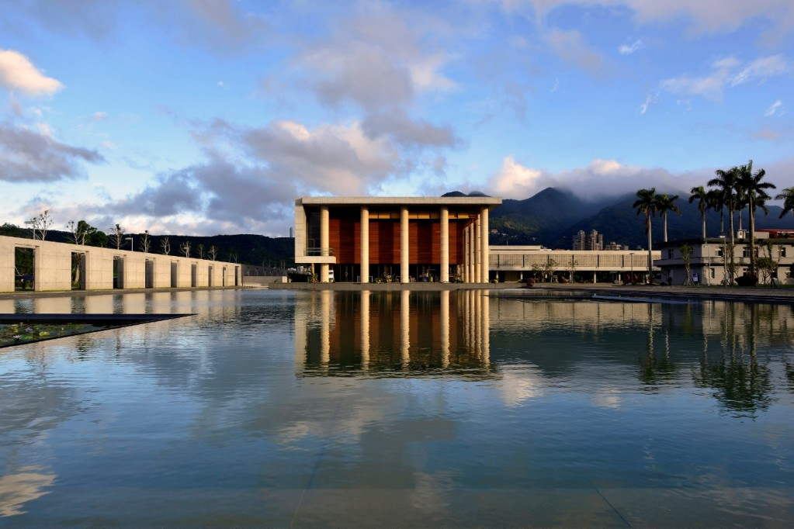

法鼓山農禪寺
Dharma Drum Mountain Nung Chan Monastery
地址：台北市北投區大業路65巷89號
「農禪寺」，是法鼓山的開山宗師東初老人，根據百丈禪師創立的叢林制度，以務農維生、禪修生活為主的原則而取的。最初只有一棟二層樓農舍，即這次被列入台北市歷史建築之一。這棟農舍目前位於大殿後方，一九七一年左右，由東初老人率領弟子建造；一九七五年，農舍落成啟用，一樓作為客堂，二樓則供奉文殊師利菩薩，稱為文殊殿。
永遠的弘法道場 一九七五年啟用後的農禪寺，在僧俗四眾經營支持下，短短三十年不到，成為漢傳佛教在台灣的弘法重鎮；其後，更成了法鼓山發展的中心樞紐；隨著法鼓山佛教園區逐一完成啟用，未來農禪寺的任務，將有另一階段的轉型。即使時空環境不停變更，農禪寺角色也跟著不斷轉換，不過，農禪寺一樣都會在每個時期，都承擔著不變的弘法、護法任務。
更多介紹：